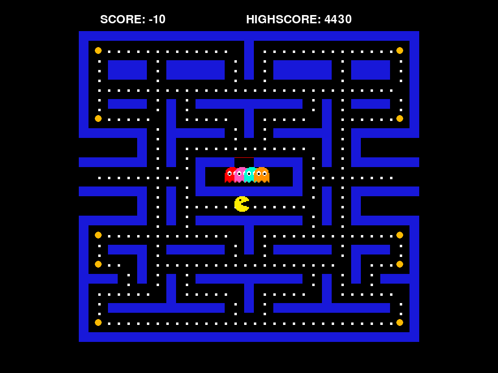
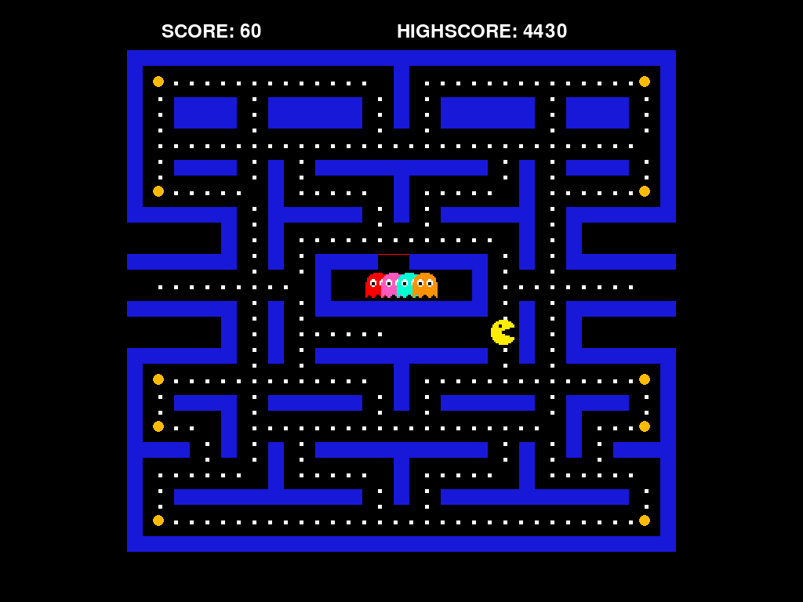
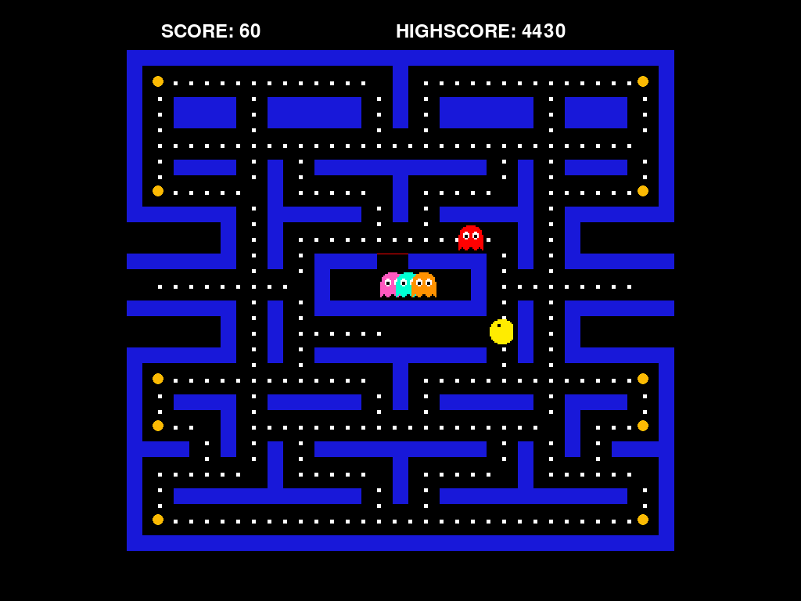
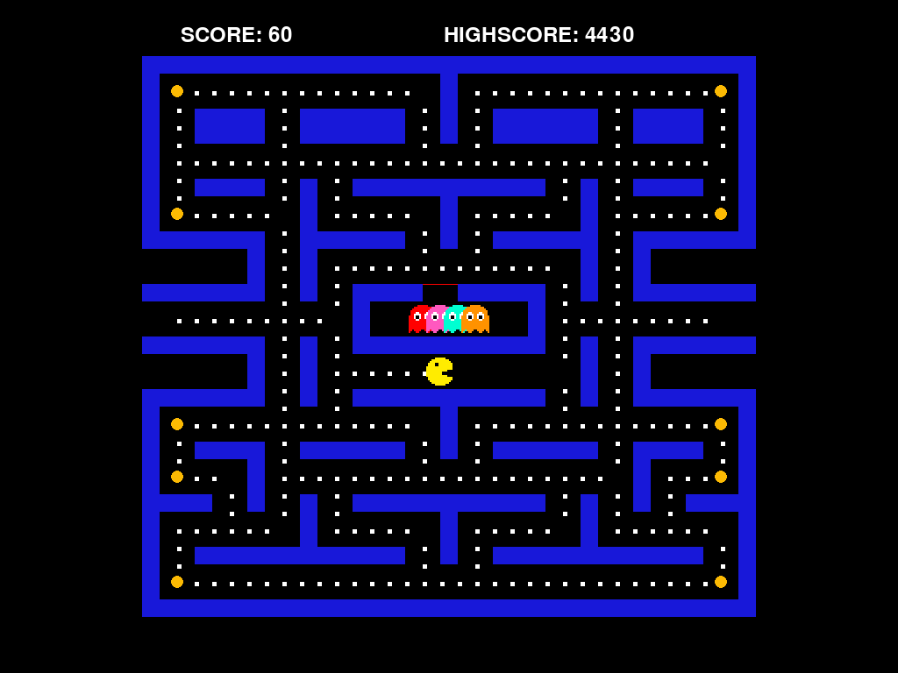

游戏说明
在开始学习代码之前，让我们先了解 PyPacman 的游戏规则。 这是一个经典的吃豆人游戏，目标是在避免幽灵追捕的同时吃掉迷宫中的所有豆子。
基本规则
🎯 游戏目标
- 控制吃豆人（黄色圆形）在迷宫中移动
- 吃掉所有小豆豆（白色方块）
- 避免被幽灵（彩色圆形）碰到
- 吃完所有豆子即可过关
🎮 操作方式
- 方向键 ↑↓←→：控制吃豆人移动方向
- ESC：暂停/退出游戏
- 吃豆人会持续移动，直到遇到墙壁或改变方向
游戏元素
计分系统
| 行为 | 得分 | 说明 | |||||||||||||||||||||||||||||||||||||||||||||||||||||||||||||||||||||||||||||||||||||||||||||||||||||||||||||||||||||
|---|---|---|---|---|---|---|---|---|---|---|---|---|---|---|---|---|---|---|---|---|---|---|---|---|---|---|---|---|---|---|---|---|---|---|---|---|---|---|---|---|---|---|---|---|---|---|---|---|---|---|---|---|---|---|---|---|---|---|---|---|---|---|---|---|---|---|---|---|---|---|---|---|---|---|---|---|---|---|---|---|---|---|---|---|---|---|---|---|---|---|---|---|---|---|---|---|---|---|---|---|---|---|---|---|---|---|---|---|---|---|---|---|---|---|---|---|---|---|---|
| 吃掉小豆豆 | +10 分 | 迷宫中有大量小豆豆，是主要得分来源 | |||||||||||||||||||||||||||||||||||||||||||||||||||||||||||||||||||||||||||||||||||||||||||||||||||||||||||||||||||||
| 吃掉能量豆 | +50 分 | 能量豆数量较少，但能触发幽灵恐慌 | |||||||||||||||||||||||||||||||||||||||||||||||||||||||||||||||||||||||||||||||||||||||||||||||||||||||||||||||||||||
| 吃掉受惊幽灵 | <+200 分 | 幽灵恐慌期间吃掉幽灵，高分奖励 | |||||||||||||||||||||||||||||||||||||||||||||||||||||||||||||||||||||||||||||||||||||||||||||||||||||||||||||||||||||
| 连续吃幽灵 | +400/+800 分 |
🔴 散开模式（Scatter）幽灵各自回到迷宫的四个角落，在那里徘徊。 这是躲避幽灵的好时机！ 持续时间：约 7 秒 🟡 追逐模式（Chase）幽灵会主动追踪吃豆人。每只幽灵有不同的追踪策略：
持续时间：约 20 秒 🔵 恐慌模式（Frightened）吃掉能量豆后触发，幽灵变成蓝色并随机逃跑。 此时可以吃掉幽灵获得高分！ 持续时间：约 6 秒（会逐渐缩短）
游戏技巧：
生命与游戏结束❤️ 生命系统
🏆 高分系统
现在你了解了游戏规则，接下来让我们深入代码，看看这些功能是如何用 Python 实现的！
开始学习 → 一、项目概览PyPacman 是一个用 Python 和 pygame 库开发的经典吃豆人游戏克隆。 项目结构清晰，代码注释详尽，非常适合作为 Python 入门到进阶的教学项目。 项目目录结构游戏运行截图   
学习建议：先通读项目结构，建立整体印象。然后按照本教程的章节顺序，
从入口文件 main.py 开始，逐步深入到各个模块。每学完一个章节，就打开对应的源码文件对照阅读。
可以运行
python main.py 亲自体验游戏，观察代码与运行效果的对应关系。
二、架构设计PyPacman 采用经典的 MVC（Model-View-Controller）变体架构， 将游戏逻辑、状态管理和渲染分离，代码结构清晰，易于理解和扩展。 数据流向图代码与运行效果对照
下面的截图展示了游戏运行时的实际效果。每一个视觉元素都对应代码中的特定模块：
迷宫来自  
核心思想：所有游戏状态都集中在 GameState 对象中，其他模块通过读写这个对象来协作。
这种设计让代码更容易调试和维护——如果你想知道「分数为什么不对」，只需要检查 GameState.points 的变化。
三、入口文件 main.py整个游戏的入口文件只有 3 行有效代码，体现了 Python「简洁即美」的设计哲学。
main.py
知识点解析
四、常量管理 configs.py把所有「魔法数字」集中到一个文件里管理，是良好编程习惯的体现。
src/configs.py（节选）
为什么用类来存常量？
命名空间隔离：使用
Colors.WHITE 而不是直接 WHITE，
可以避免与其他模块的同名变量冲突。类在这里只当作「容器」使用，不需要实例化。
五、主循环 runner.py所有游戏都有一个「永远在转」的主循环，这是游戏编程的核心模式。 主循环流程图
src/runner.py（主循环核心代码）
六、状态机 state_management.pyGameState 是整个游戏的「数据中心」，所有可变状态都集中在这里管理。
src/game/state_management.py（@property 封装）
@property 的好处：外部代码可以像访问变量一样读写属性
（
game_state.points = 100），但实际上会经过 getter/setter 方法。
这样可以在赋值时加入校验逻辑，防止写入非法值。
七、事件处理 event_management.pyEventHandler 负责把玩家的键盘输入转换成 GameState 的状态变化。
src/game/event_management.py
八、关卡系统深度解析这是整个游戏最让人头疼的部分，但也是最有价值的学习材料。 我们将从 JSON 文件结构开始，一步步追踪数据如何从文件变成屏幕上的画面。
学习路线：JSON 结构 → 加载流程 → 坐标转换 → 渲染管线 → 策略模式。
建议对照
levels/level1.json 和 src/gui/pacman_grid.py 一起阅读。
8.1 JSON 关卡文件结构
每个关卡都存储在一个 JSON 文件中（如
levels/level1.json（简化版）
矩阵单元类型说明
8.2 矩阵可视化：从数据到画面
下面的图示展示了 JSON 矩阵（32 行 × 35 列）如何映射到屏幕。
注意吃豆人出生点 8.3 加载流程详解关卡加载分为三个阶段：读取 JSON → 解析数据 → 初始化对象。
src/gui/pacman_grid.py - load_level() 方法
8.4 坐标转换：逻辑格 → 屏幕像素这是最容易混淆的部分。游戏使用两套坐标系： 逻辑坐标系（矩阵索引）
屏幕坐标系（像素）
坐标转换公式
8.5 渲染管线：draw_level() 详解
渲染使用策略模式（Strategy Pattern）：通过字典
src/gui/pacman_grid.py - draw_level() 双重循环
8.6 策略模式的优势
使用
❌ 传统 if-elif 方式
✅ 策略模式（本项目采用）
扩展性：如果要新增一种单元类型（比如 "teleport" 传送门），
只需：① 在 JSON 中使用
"teleport"；② 实现 draw_teleport() 方法；
③ 在 function_mapper 中添加映射。无需修改 draw_level() 循环逻辑。
8.7 完整数据流总结
性能优化：draw_level() 每帧都被调用（60fps），但由于使用预计算的
_coord_matrix 和策略模式查表，实际开销很小。32×35=1120 次循环在现代 CPU 上几乎无感。
如果需要进一步优化，可以考虑只重绘变化的格子（脏矩形算法），但本项目未采用。
8.8 实战：修改关卡设计
理解了整个流程后，你可以尝试修改
调试技巧：在
pacman_grid.py 的 draw_level()
方法末尾添加 self.draw_outliners() 调用，可以看到绿色的调试网格线，
帮助你理解坐标对齐情况。
九、吃豆人 pacman.pyPacman 类继承自 pygame.sprite.Sprite，实现了移动、吃豆、动画等功能。 继承关系图
src/sprites/pacman.py（核心方法）
十、幽灵 AI ghosts.py四只幽灵各自有不同的追逐策略，这是经典吃豆人游戏的核心玩法。 多态示意图核心架构：策略模式 + 抽象基类
所有幽灵都继承自
src/sprites/ghosts.py（抽象基类定义）
Python 知识点：ABC（Abstract Base Class）+ @abstractmethod 是 Python 实现接口的方式。
它确保子类必须实现特定方法，否则无法实例化该子类。这是设计模式中的"模板方法模式"。
Blinky（红色）：直接追踪最简单粗暴的策略：直接追吃豆人当前位置。Blinky 是玩家的"影子"，始终紧追不舍。
src/sprites/ghosts.py - Blinky 实现
关键方法： Pinky（粉色）：预判前方 4 格伏击型策略：瞄准吃豆人前进方向的前方 4 格。当玩家直线逃跑时，Pinky 会"抄近路"到前方拦截！
src/sprites/ghosts.py - Pinky 实现
核心方法
src/sprites/ghosts.py - 前方目标计算
Inky（青色）：向量镜像包抄最复杂的策略：基于 Blinky 和吃豆人位置计算镜像点。Inky 的路径最"飘"，会根据 Blinky 和吃豆人的相对位置形成包抄！
src/sprites/ghosts.py - Inky 实现
数学原理：
依赖关系：Blinky 必须在每帧更新 Clyde（橙色）：距离切换策略胆小鬼策略：远时随机乱走，近时突然追击。Clyde 远看像在闲逛，一旦靠近就突然变得激进，与 Blinky 的持续压迫形成互补！
src/sprites/ghosts.py - Clyde 实现
移动执行：贪心算法所有幽灵确定目标后，移动逻辑是统一的：在每个岔路口选择最接近目标的方向（贪心一步）。
src/utils/ghost_movement_utils.py
为什么不用 A* 寻路？
四鬼采用岔路口贪心策略，计算轻量，行为接近街机原版。A* 寻路虽然能找到最优路径， 但计算量大，而且会让幽灵变得"太聪明"，失去经典吃豆人的游戏感觉。 状态机：三种模式切换
幽灵行为由 🔴 Scatter（散开）各自回到地图四角的固定位置徘徊。这是躲避幽灵的好时机！ 持续时间：约 7 秒 🟡 Chase（追逐）使用上述 AI 策略主动追踪吃豆人。每只幽灵有自己的目标计算方法。 持续时间：约 20 秒 🔵 Frightened（恐慌）吃能量豆后触发，幽灵变蓝并随机逃跑，此时可以被吃掉！ 持续时间：约 6 秒（会逐渐缩短）
模式切换由定时器事件驱动
总结：四鬼策略对比
设计精妙之处：
这就是为什么吃豆人游戏即使简单，玩起来却很有挑战性——四只幽灵的不同策略形成了复杂的协作追击！ 十一、音效系统 sounds.pySoundManager 使用单例模式，确保全局只有一个音效管理器实例。
src/sounds.py（单例模式）
单例模式的作用：在 runner.py 里创建一次
SoundManager() 并加载音效后，
在其他模块里再次 SoundManager() 会得到同一个对象，可以直接播放已加载的音效。
十二、Python 知识点速查表
|